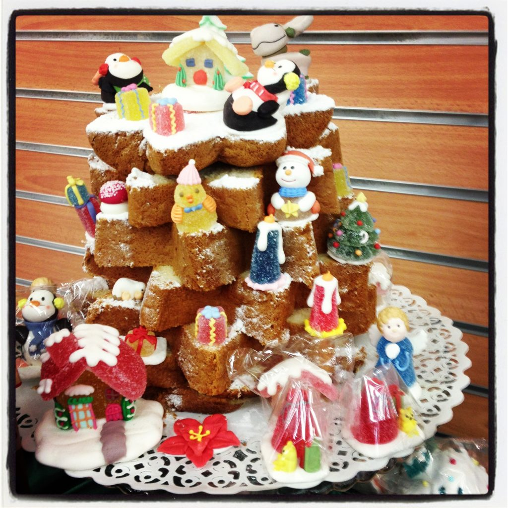

A decorated Pandoro
I love the Pandoro, which along with the Panettone, is the traditional Italian Christmas cake. Not only I love it for its simple taste, it's just a soft and sweet cake with powdered sugar on top, but also because thanks to its shape you can create many interesting designs. Exactly like the one in the photo. Wanna give it a try and amaze your friends at your next Christmas party?